Last modified: Tue Aug 31 13:36:03 HST 1999
Leap aids in time management through automated support for recording and analyzing effort: the amount of time you devote to important work-related tasks. Leap provides two tools for effort recording and analysis, one called Io (which is Hawaiian for "Hawaiian Hawk") and one called Naia (which is Hawaiian for "porpoise").
In addition to the generic benefits identified in the self-help books, and in addition to the specific quantitative process improvements we will discuss later, time management using Leap tends to provide the following immediate benefits:
Tracking effort, even with the Leap toolset, takes a certain amount of work. And there will be times when you are away from the Leap toolset and need to record the effort you devoted to a project on a piece of paper for entering into the tool later. Because tracking your effort does take some work, we recommend that most people track effort on one or at most two projects at a time.
While it may be tempting at first to try to track all the time you spend on everything, the danger is that you will find it too time-consuming and give up entirely. So, track your effort on just one or two of your most important projects. If you are just recording time on one or two projects, then the overhead of time recording will not seem very significant, and it will also have the positive effect of focussing you more on those one or two activities (since those are the ones you are recording time effort on.)
Here's a screen shot of the Io tool after you invoke it from the Leap toolset data menu, annotated with some explanatory text.
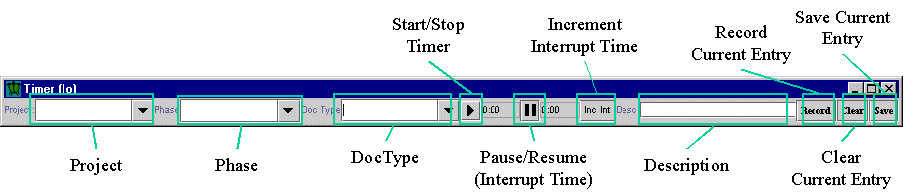
When you use Io to record time, you can specify the name of the project you are working on, the phase of development you are in, the type of document you are working on, and a brief description of the current activity. Note that none of these values are required: Io can be used to simply record start and stop times. However, as you will see, by providing this additional information about the context in which this time was spent, Leap can provide you with significantly more useful kinds of information. So, it's useful for you to provide this information, and we'll show you how in a moment.
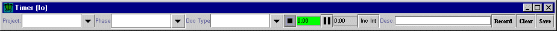
If you press the Start/Stop button again, you complete the recording of a single time interval, as illustrated here:
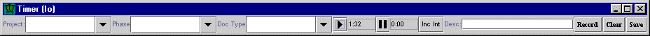
The above screen shows that I just recorded a time interval of 1 minute and 32 seconds. At this point, I can't simply press the Start/Stop button again to add more effort, because Io can only represent one time interval at a time. If I press the Start/Stop button again, Io will present me with a dialog box asking me if I want to delete the current time interval and start over again:
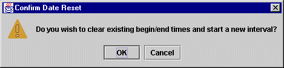
If you try this and get this dialog box, press "Cancel" to return to Io with a time interval of a minute or so displayed. Once a completed time interval is displayed in Io, you have two choices for what you can do with it: "Record" it or "Clear" it. Both of these choices are provided by buttons on the right hand side of the tool.
If you press the "Clear" button, then you will reset the time interval to the right of the Start/Stop button to 0:00, and you can now begin recording a new time interval by pressing the Start/Stop button. In general, you will "clear" time intervals whenever you make a mistake in Io and want to delete the currently displayed time interval and start over.
If you press the "Record" button, on the other hand, then you make the displayed time interval "official" within Leap. (Don't worry, even if you press "Record" on a bogus time interval, there are ways to fix it using Naia.) When you press "Record", Io will record the currently displayed time interval, then reset the displayed interval to 0:00. Io is now ready for you to press Start/Stop to begin another effort entry. Try pressing the "Record" button now to record your currently displayed time entry.
Naturally, you are now wondering what you just did! What does it means to "record" and thus make an effort entry in Leap "official"? In general terms, you can think of Io as providing a "buffer", or temporary storage area, for building a single effort entry record in real-time. When you press "Record", Io sends this temporary effort entry off to another part of Leap for more permanent storage and analysis. The tool that provides you with a view on this more permanent representation of time entries is called "Naia".
I will cover Naia in more detail in a moment, but it may help you start to understand what's going on if you now go back to the Leap Toolset window and invoke Naia. Here's what it would look like:
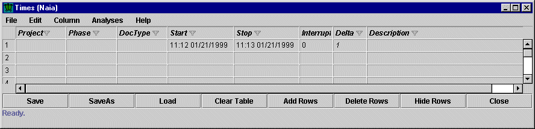
In other words, by pressing "record" in Io, you've sent that time interval data to Naia, where it is now displayed. (One way to see this visually is to open both Io and Naia at the same time, then create an effort entry in Io, then press Record. The current effort entry in Io will disappear and reappear instantly in Naia.) It is also interesting to note that the same information about a time interval is displayed somewhat differently in Io and Naia. In Naia, the actual start and stop dates and times are explicitly represented. In the above screenshot, you can now see that I started the Io timer for this example on January 21, 1999 at 11:12am, and stopped timing at 11:13am, for an elapsed time of 1 minute, as shown in the "delta" column. Io, on the other hand, does not display dates or the start/stop times. Instead, Io represents the interval between the start and stop time in minutes and seconds. Naia does not display seconds and simply rounds the interval down to the nearest minute.
So, to review: you can build a time interval entry in "real-time" using Io. Once you've completed building this time interval, you press "Record" to send it off to Naia. As I will show you later, you use Naia to edit time intervals, so you can fix errors you made using Io with Naia. Also, you can enter time intervals into Naia directly, without using Io at all. This is useful, for example, when you work on a project away from your computer and record your time on a scrap of paper. When you later want to enter this time, you will use Naia to do it.
Io supports the ability to temporarily suspend the timer with the Pause/Resume Interrupt button. Say you are working on a project, and Io is recording time for you. Then the phone rings. By pressing the Interrupt button, you suspend the green-colored effort timer, and begin accumulating "Interrupt" time, which is indicated with a yellow field, as illustrated next:
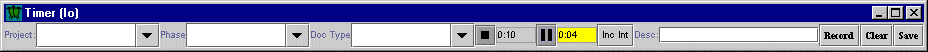
Here I began recording a time interval, then pressed the Interrupt button after only 10 seconds of effort. (The phone rang.) Now, my accumulated effort is suspended at 10 seconds, and the interrupt timer is tracking the amount of time wasted by this interruption. The screen above shows that 4 seconds have so far elapsed in this interruption.
When the interruption ends and you are ready to resume work on a task, then you simply press the Interrupt button again, and the timer associated with effort will once again start to accumulate time, while the interrupt timer will become suspended:
This screen shows that my first interrupt lasted 23 seconds before I returned to the task, and now I have accumulated 20 seconds of effort.
Unlike the Start/Stop button, which can only be pressed once to begin a given time interval and once to end a given time interval, you can record as many interruptions as you want using the Interrupt button. As the last screen shows, it is not uncommon to have more interrupt time than effort time in a given time interval. This particular situation of having more interrupts than effort in a given time interval is a very simple indication that your productivity is probably being adversely affected by the level of interruption in your work environment.
The Interrupt button works well when you remember to press it at the beginning of an interruption and remember to press it again at the end of an interruption. Of course, in many situations, you forget to do this and notice sometime later that you are accumulated effort time during what should really have been an interruption. Io provides a simple way to add in those interrupt times "after the fact" with the "Increment Interrupt" button. Pressing this button brings up a dialog box that allows you to enter an integer representing the number of minutes to add to the interrupt time (and subtract from the effort time):
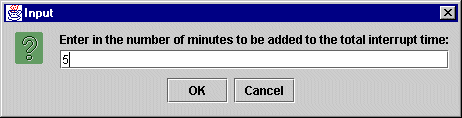
This screen shows this dialog box just after I have typed in "5", indicating that I would like to add five minutes to my total interrupt time so far, and subtract five minute from my total effort time so far.
Before getting into the specification of contextual information, it is useful to note that it is possible to learn a few interesting things about your working habits by simple analysis of effort entries such as those I showed you above. For example, by simply recording the effort you devote to any major work activity, you can use Leap to learn how many direct hours of effort you typically have per day or per week. If you decided that your current allocation of direct hours is too low, you could make changes to your working habits and use Leap to see if those changes are, indeed, resulting in more direct hours being recorded per week. Alternatively, you might set a goal of devoting two direct hours of effort per day to major tasks, and use Leap to monitor your progress toward the achievement of this goal.
However, several additional kinds of analyses become available to you when you supply contextual information with your effort data. Leap provides direct support for four kinds of contextual information in each effort entry record: the Project associated with this effort , the Phase of development in which this effort occurred, the Document Type associated with this effort (if any), and an unstructured textual Description that can contain a comment about the effort in that particular interval. You do not need to record all of this contextual information for every single effort entry. Furthermore, you do not even need to record all of this information at the moment that the effort entry is made--you can always go back and add it later using Naia. Finally, you can always use Naia to revise and update contextual information later. Let's now look at why Leap gives you the opportunity to supply each of the four pieces of contextual information.
First, the Project field is perhaps the single most important piece of contextual information that you can associate with an effort entry. Project definition is discussed in detail in another chapter, but for now, each Leap project typically represents a relatively short duration (1-3 week) work activity for which most effort is focussed primarily on one type of work product. One very typical Leap project is the review of a design document by a small group, which usually takes about a week or two to complete. Another typical Leap project is the enhancement of a system to add a new piece of functionality through addition/modification of several hundred lines of code. Another typical Leap project is the writing of the first draft of a book chapter.
By specifying the project that is the object of the effort in each entry, you can determine not only how many direct hours are available to you per day or per week, but how that effort is allocated among your major tasks. In addition, once you associate effort data with a project, you can then gather size data on that project and use these two kinds of data to obtain a measure of productivity---the amount of time it requires you to produce a given unit of a work product. As a simple example of this productivity calculation, I recently wrote a small grant proposal which was 3,150 words long and required 361 minutes of effort. My productivity on this grant proposal was thus 523 words/hour. On the other hand, I recently expanded a conference paper into a journal article, in which I added/modified about 6,440 words over a little more than 1000 minutes of effort for a rate of about 350 words/hour. Over time, as I gather more productivity data of this type, I can find out what my productivity range is and use that to help me estimate upper and lower bounds on how long it might take me to write a new proposal, given some estimate of its final size. In addition, I might relate productivity values with later defects discovered in the document (or with the success or failure of the proposal!) Such correlations could help me by revealing to me that a productivity rate of over 500 words/hour indicates a "rush job" which will tend to have lots of defects and will be less likely to be successful.
Second, you to specify the document type to be associated with an effort entry. Knowledge of the specific document type worked on during a given time interval is quite useful for projects where documents of different types are produced or modified. For example, in a software development situation, a given system increment might require writing and/or modifying some low-level device driver code in C and other high level user interface code in Java. By recording which document type ("C Source" or "Java Source") you focus on during each effort interval, Leap can help you find out, for example, that your average productivity when hacking low-level C device driver code is about 5 lines of code per hour, while your average productivity hacking Java user interface code is about 15 lines of code per hour. In this situation, if you didn't keep track of the document type, you might have ended up with an average productivity for "coding" of 10 lines of code per hour, which is off by 100% for both your Java coding and your C coding.
Third, you can specify the phase of the activity addressed during the effort entry. For certain projects, it can be helpful to define a "Phase Set": a set of phases that you typically engage in during the activity. For example, when I write a paper for publication in a conference, my effort typically involves three phases: the creation of an initial draft, then a review stage, then a final draft. For small programming projects, my effort involves design, implementation, review, testing, and release phases. By recording the phase associated with each effort interval, Leap can provide me with a breakdown of how my effort was divided up among phases for a particular project, and how that breakdown of effort compares to my average breakdown of effort for all projects using that particular phase set. Such information can be very useful: for example, it might reveal that projects with high amounts of testing effort also contained low amounts of design effort or review effort.
Fourth and finally, Io you can add an unstructured "comment" to each effort entry using the description field. Comment fields are saved with each effort entry, but are not otherwise manipulated by Leap, and no analyses upon comments are provided. You may find them useful if you want to remember some peculiarity of an effort interval for later reflection. For example, you might find that you are almost constantly interrupted during a given effort interval, and decide to write a comment in the description field noting that fact. (While Leap records the cumulative amount of interruption time, it does not record the total number of interruptions. During a three hour interval, one 60 minute interruption is probably much less intrusive than 60 one minute interruptions, but Leap does not distinguish between the two.)
In Io, you can specify the Project, Phase, and Doc Type in one of two ways: either by typing the value in by hand, or by selecting a predefined value from the pull down menus associated with these three fields. I do not recommend the manual typing approach, because it is time consuming to type in these values, and it might lead to you indicating the same field value in slightly different ways on different occasions. For example, you might be working on a requirements specification for an accounting application, and one day type in the project as "Reqs Spec" and another day as "Account Reqs". Of course, Leap cannot recognize these two time intervals as belonging to the same project.
To avoid typing in project, phase, and document type data by hand, you must define values for these fields using some of the other Leap tools: Ilio for projects, Ulua for phases, and Puaa for document types. It is not hard to define your own projects, phases, and document types, and other chapters in this user guide will cover this definition process in detail. For the moment, the file called "sample.defs" in the leap/demo directory provides some sample definitions for projects, phases, and document types. After I load this file into Leap, Io's pull-down menus allow me to use its menus to begin recording, for example, the effort associated with planning the review of the design document for "Bar V 1.0" in the following way:
This concludes the introduction to effort recording using Io. The next section describes Naia, a tool which, in addition to collecting time data, also provides you with access to some of the analyses involving effort provided by Leap.
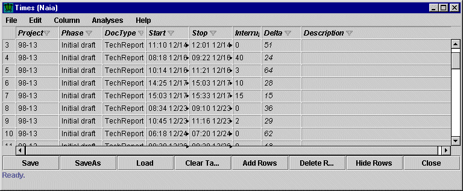
By default, Naia displays eight fields for each effort entry: the Project, Phase, DocType, Start timestamp, Stop timestamp, cumulative interrupt time in minutes, cumulative direct effort time (i.e. delta time) in minutes, and an unstructured text description field.
Naia is one of the "table-based" Leap tools, and thus there is significant amount of "generic" functionality available within Naia that is shared by all table-based Leap tools. For details on pop-up menus, sorting, filtering, hiding and showing columns and rows, resizing columns and rows, and so forth, please consult the chapter entitled "Generic Table Functionality".
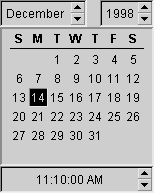
This widget is a little unintuitive to use, because you must always click on a date to "commit" the edit of a date and time, even if you are only editing the time value. So, for example, assume the calendar above represents a start time. It is currently set to December 14, 1998 at 11:10 am, and assume that you want to change this start time to 11:30am on the same day. After using the spin boxes to change the time value, you must now click on the darkened "14" box to commit this change to the time value. If you don't click on a date as your final action to commit an edit of a time or date, the widget will revert back to it's original value (i.e 11:10am, in this case) when the calendar widget closes.
You don't have to use this calendar widget all the time. You can also edit a Start timestamp or Stop timestamp field by hand by simply clicking in the field and editing the text string. However, Naia will not let you tab out of the field until the timestamp string can be parsed correctly. Note that the pop-up menu also provides a "Clear date" option, which allows you to blank out a Start or Stop field if you desire. Finally, simply clicking in a Start or Stop field automatically fills it in with the current time and date.
You cannot enter a delta time--the total effort associated with an entry--by hand in Naia. Delta times are derived values: they are determined automatically by computing the interval in minutes between the Start and Stop times, and subtracting out any Interrupt time. Delta times (like the Project field in Iole) are shown in italics to indicate that the value is computed by the tool and cannot be entered by hand.
There is a kind of "one-way" relationship between Naia and Io. When you press "Record" in Io, you send the current effort entry displayed in Io to Naia. However, there is no "reverse" direction: there is no way to send an effort entry from Naia back to Io. Once an entry exists in Naia, you must manage it using Naia from then on.
The Direct Hour Trend provides a bar chart of the total number of direct hours of effort you devoted to all of your projects over time, as calculated from the entries currently displayed in Naia. Time can be measured in days, weeks, or months. Here is an example of one such bar chart:
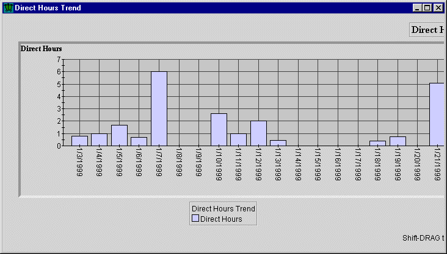
You use this bar chart to obtain a sense of your aggregate direct hour effort on all your projects over time. The above screen shot shows my direct hour effort on a daily basis over 17 days. Apart from two days where direct hours climbed above five hours, I devoted effort to my major research projects at a rate of about one to two hours per day. Furthermore, I devoted no effort to my major research projects on almost a third of those days.
The Direct Hours per Project Trend provides a bar chart of the number of direct hours you devote on a project-by-project basis over time, as calculated from the entries currently displayed in Naia. Once again, time can be measured in days, weeks, or months. Here is an example of this second analysis for the same time period:
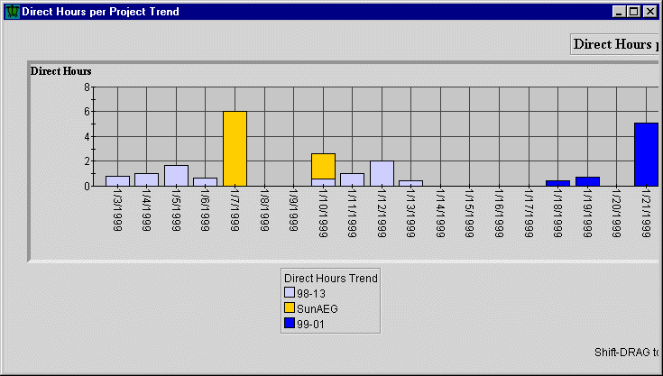
This chart is a bit more informative, since it shows which project obtained direct hours on each day. Here you can see that my "big day" during this period was devoted to the "SunAEG" project, and that on January 10, I spent time on two projects.
Note that these charts allow you to shift-drag to move the visible portion of the chart around. The Direct Hours per Phase Trend and Direct Hours per DocType trend are similar to the above chart and will not be shown here.
The analyses in Naia are all focussed exclusively on time. Leap provides many more analyses that use time data in combination with other data such as size or defects, but these analyses are obtained through the project "condensation" mechanism. See the chapter on Project definition and interpretation for more details.
Philip Johnson